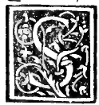

CHAPTER LXIX¶
On the Measure of All the Regular and Dependent Bodies, and the Panegyric to Duke Ludovico Maria Sforza and the 1498 Franciscan General Chapter in Milan.

It now follows to speak of the mensuration (dimensione) of the five regular bodies and of all their dependent bodies (abscisi and elevati).
1. Measuring the Five Regular Solids and Their Truncated (Abscisi) and Elevated (Elevati) Dependents
The Five Regular Bodies: Concerning the five regular bodies themselves, I need not expand further here, because I already composed a dedicated treatise on their exact surface and solid measures for Your Ducal Highness’s most illustrious kinsman, Guidobaldo da Montefeltro, Duke of Urbino (Guido Ubaldo Duca de Urbino), included in our printed great work (Summa de Arithmetica, 1494) dedicated to His Lordship—of which many copies are found here in your renowned city of Milan. Truly their mensuration is as speculative and sublime as those bodies are more excellent and perfect than all others: a matter for the tragic buskin (materia certamente da coturno e non da sciocco), not for a fool!
The Truncated Dependent Bodies (*Corpi :term:`Abscisi <abscisum>`*): The method for measuring all the truncated dependent bodies is identical to that just given in Chapter LXVIII for truncated pyramids:
First restore the truncated body to its complete, perfect regular parent body (redurli ali suoi totali perfecti), and measure the volume of that complete regular body by the rules given in our treatise.
Next, measure the corner pyramids (*pyramidelle*) that were sliced off from the vertices of the regular parent body to produce the truncated body. Because all the vertices of a regular body are equal and uniform, all these sliced-off pyramidelle are equal to one another: thus, as soon as one corner pyramidella is measured by the rules of pyramids (Chapter LXVI), multiplying it by the number of vertices of the regular parent body (4 in the :term:`tetracedron <tetrahedron>` absciso, 8 in the cubo absciso, 6 in the :term:`octocedron <octahedron>` absciso, 12 in the :term:`ycocedron <icosahedron>` absciso, 20 in the :term:`duodecedron <dodecahedron>` absciso) gives the total volume of all the missing corner pyramids.
Subtract the sum of those corner pyramidelle from the volume of the complete regular parent body; the remainder is the exact solid volume of the truncated body (absciso):
\[\text{Volume}_{\text{absciso}} = \text{Volume}_{\text{regular}} - N_{\text{vertices}} \times \text{Volume}_{\text{corner pyramidella}}\]
The Elevated Dependent Bodies (*Corpi Elevati*): Conversely, if the dependent body belongs to the class of the elevated (elevati) bodies (formed by erecting pyramids upon the faces of a core body):
First measure the core perfect body (el suo perfecto).
Next measure one of the equal elevated pyramids (*pyramidelle*) standing upon its bases, and multiply by the number of bases of the core body (4 on the :term:`tetracedron <tetrahedron>` elevato, 6 on the cubo elevato, 8 on the :term:`octocedron <octahedron>` elevato, 20 on the :term:`ycocedron <icosahedron>` elevato, 12 on the :term:`duodecedron <dodecahedron>` elevato, and similarly for the 14, 26, and 32 bases of the :term:`abscisi <abscisum>` elevati).
Add the total volume of those outer pyramidelle to the volume of the core body:
\[\text{Volume}_{\text{elevato}} = \text{Volume}_{\text{core}} + N_{\text{faces}} \times \text{Volume}_{\text{face pyramidella}}\]
Thus, guided always by the light of the perfect regular bodies—subtracting from them for the abscisi and adding to them for the elevati—one finds the measure of every dependent body; whereas anyone who attempted to measure them without reducing them to their regular parents would wander into an inextricable chaos (in chaos inextricabile)!
2. Encomium of Duke Ludovico Maria Sforza, Santa Maria delle Grazie, and the 1498 Franciscan General Chapter in Milan
In setting forth these rules, I have always presupposed the rare and speculative intellects ready for every discipline—and above all, by antonomasia and preeminence, the supreme intellect of Your Ducal Highness, to whom I have never presumed to speak as to one ignorant of these or any other sciences. For Your Highness is adorned with every virtue, so that to recount them all, not merely paper but a whole lifetime would not suffice (Sed quod patet expresse non est probare necesse):
With a single glance Your Highness heals and gladdens every troubled sight, shining like the sun that warms and illumines both poles—the sole peace, refuge, and refreshment not only of Italy, but of all Christendom!
In Your Highness dwell mercy, piety (pietade), and magnificence; before your eloquence Demosthenes, Cicero, and Quintilian yield, as from your mouth flows a wide river of nectar to the good and a stern blade to the wicked.
In religious devotion Your Highness is not merely the restorer of sacred temples, but their unceasing founder and author, attending the diurnal and nocturnal divine offices with no less reverence than professed prelates—as is made manifest by your devout Ducal Chapel (la dignissima sua devota capella), adorned with the most worthy singers (dignissimi cantori), and by the most sacred temple of Santa Maria delle Grazie (el suo sacratissimo tempio de Gratie), which Your Highness has constructed in your renowned city of Milan with no less fitness than Octavian Augustus built his universal Temple of Peace in Rome, never tiring of adorning it day by day and supplying its every need!
And I beg the reader not to attribute this brief discourse to flattery (adulatione), from which both by nature and by my religious profession I am wholly alien (Sed quod oculis vidimus testamur—“what we have seen with our own eyes, we bear witness to”!). For all of this was witnessed not by me alone, but by my entire most sacred Seraphic Order of St. Francis together with its reverend head and pastor, our Father Master Francesco Sansone of Brescia (M. Francesco Sansone da Brescia), most worthy Minister General, at our General Chapter held this present year [May–June 1498] here in your renowned city of Milan!
To that General Chapter gathered a vast multitude of the most famous doctors and bachelors in sacred theology and other sciences from the whole world and from every nation under heaven (ex omni natione quae sub caelo est). Every day solemn cathedral and public disputations were held in the constant presence of Your Ducal Highness’s immense humanity and devout condescension toward your servants, together with the Most Reverend Lordship of your brother-in-law Monsignor Ippolito d’Este, Cardinal Deacon of Santa Lucia in Selci (Hipolyto tituli Sanctae Luciae in Silice dyacono Cardinale Estense), and your ornate courtly retinue. I pass over in silence the overflowing abundance of provisions poured forth from Your Ducal Highness’s hands to sustain that vast multitude—so abundant that it sufficed not only for the thousands then present, but for our friars for many months afterward! For your salvation and happy state the whole Order of Friars Minor lifts its joined hands in prayer to the Most High, and particularly I, an unworthy and wretched sinner, who continually commend myself to Your Ducal Highness.